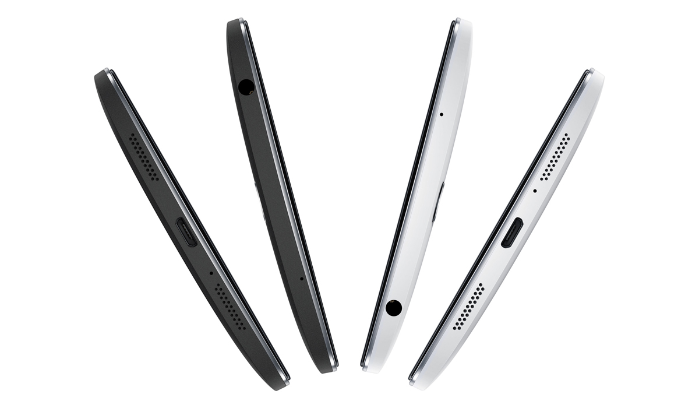
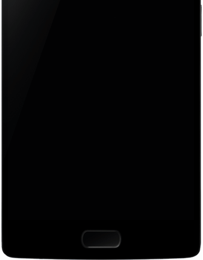
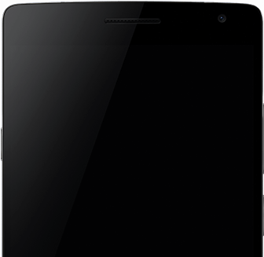
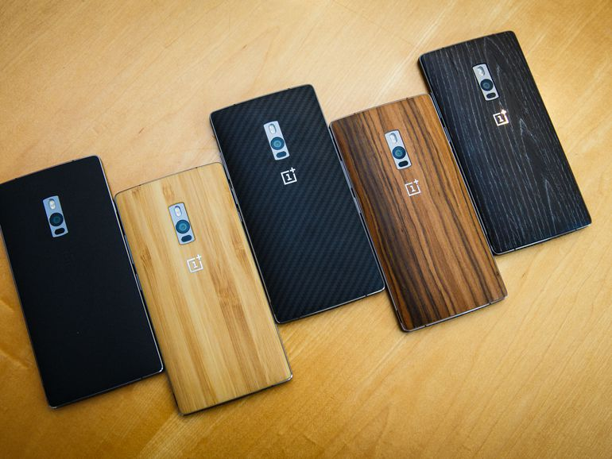

One plus 3 One plus 2 Store Support
One plus 3 One plus 2 Store Support One plus 3 One plus 2 Store Support
We went through hundreds of iterations of the OnePlus 2 before finalizing the design that perfected a balance of look and feel. It’s about everything being in the right place, creating a seamless, fluid experience. No detail is too small to be perfected.
Meet the One Plus 2 Overview Design Camera Oxygen OS Specs
StyleSwap
In the past, changing the look of your device meant covering everything with a case. StyleSwap allows you to change both the look and feel of your device without altering the OnePlus 2’s beautiful form factor.With our new StyleSwap system, you can swap covers in seconds - no tools required.
The Best Materials
Strong and exceptionally lightweight, the OnePlus 2’s outer frame is crafted from a resilient alloy of aluminum and magnesium. Our exclusive design ensures ideal antenna reception and temperature regulation, increasing performance. Stainless steel accents, Gorilla® Glass, and an array of unique back covers mean you are always touching the most premium materials. 
Less is More
When you first glance at the OnePlus 2, it’s not
about what you notice - it’s about what
you don’t. On the front of the device, you won’t
find any distracting logos. When not in use
navigation keys dim and disappear behind a
sleek pane of black glass. It’s what’s on your
screen that’s really important - so everything
else is kept out of your way.


Notifications, Your Way
The OnePlus 2’s Alert Slider integrates seamlessly with Android’s notification settings. Switch between 3 profiles: All Notifications, Priority Interruptions, and No Interruptions - without having to unlock your phone or even take it out of your pocket. Perfect for meetings, movie theaters, or just a bit of peace and quiet.
Overview
<--Previous
Camera
Next -->